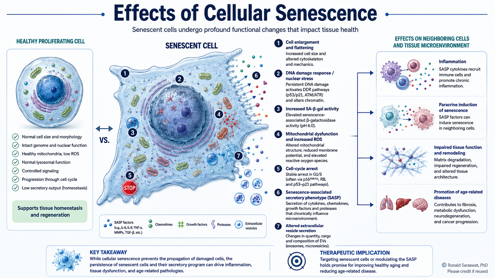

Extracellular Vesicle Biology
Investigating extracellular vesicles as mediators of intercellular communication, from age-associated changes in EV composition to uptake, intracellular delivery and functional responses in recipient cells.
Cell & Molecular Biologist
Investigating cellular communication, ageing and disease through extracellular vesicles and quantitative cell biology.
I am a cell and molecular biologist interested in how cells communicate, respond to stress and change with age.
During my doctoral research, I investigated how ageing and replicative senescence alter endothelial-cell phenotypes, extracellular-vesicle composition and communication with recipient cells, combining primary endothelial models with functional assays, proteomics and quantitative analysis.
My subsequent postdoctoral work extended this interest in intercellular communication into engineered mammalian systems, where I optimised and standardised quantitative functional assays for extracellular-vesicle cargo delivery, including NanoLuc-based donor–recipient cell systems.
Across these projects, I combine mechanistic cell biology with quantitative experimentation, assay optimisation, proteomic analysis and functional validation to investigate biologically and translationally relevant questions.
My research connects extracellular-vesicle biology, cellular ageing and quantitative experimental systems across primary and engineered mammalian cell models.
Investigating extracellular vesicles as mediators of intercellular communication, from age-associated changes in EV composition to uptake, intracellular delivery and functional responses in recipient cells.
Studying how ageing and replicative senescence reshape endothelial-cell phenotype, stress responses and extracellular-vesicle signalling, with particular interest in vascular dysfunction and thrombo-inflammatory biology.
Developing reproducible experimental workflows in mammalian cell systems through reporter-based functional assays, transfection optimisation, EV-dose optimisation, experimental controls and quantitative biological readouts.
Integrating LC-MS/MS proteomics with quantitative and pathway-level analysis to identify biologically relevant protein signatures, interpret extracellular- vesicle datasets and prioritise candidates for functional investigation.
Featured Research Concept
A conceptual illustration of key cellular features and downstream consequences of senescence, reflecting a central biological theme explored during my doctoral research.

A scientific trajectory spanning cell biology, extracellular vesicles, ageing, proteomics and translational research across France, Germany and Ireland.
Lavieu Lab · Université Paris Cité · Paris, France
Optimised and standardised quantitative NanoLuc-based functional assays in engineered HeLa donor–recipient systems to investigate extracellular-vesicle-mediated cargo delivery. The work included assay optimisation, transfection workflows, experimental controls and evaluation of modified and lipid-hybridised EV systems in collaborative translational projects.
Aix-Marseille Université · C2VN · France & Johannes Gutenberg University Mainz · CTH · Germany
Horizon 2020-funded doctoral research within the TiCardio Innovative Training Network, investigating how ageing and replicative senescence alter endothelial-cell phenotype, extracellular-vesicle composition and functional communication with recipient cells. The work combined primary endothelial models, EV biology, senescence and thrombo-inflammatory assays, proteomics and quantitative analysis.
CTH Mainz & ISAS Dortmund · Germany
International scientific training and collaborative research within the TiCardio network, including experimental vascular biology and proteomics-focused work supporting the doctoral research programme.
OmniSpirant Ltd. / Lambe Institute for Translational Research · Ireland
Contributed to a translational project using engineered mesenchymal stromal cells and extracellular-vesicle-based delivery systems. Work included EV isolation and PEGylation, physicochemical characterisation, lentiviral-GFP cell engineering, EV tracking and experimental documentation.
School of Medicine · University of Galway · Ireland
Investigated redox signalling, peroxiredoxins and mitochondrial biology using protein biochemistry and electrophoretic approaches, building an early research foundation in cellular stress and disease mechanisms.
Selected peer-reviewed publications, current research outputs and doctoral work.
Original research manuscript
Currently under peer review
Thrombosis and Haemostasis · 123(8):808–839
View publicationAtherosclerosis · 319:121–131
View publicationMethods in Molecular Biology · Vol. 1855 · 279–286
View publicationAix-Marseille Université / Johannes Gutenberg University Mainz
View thesisExperimental and analytical expertise spanning quantitative cell biology, extracellular vesicles, molecular biology, imaging and proteomics.
Gene & Tonic · Paris · 2026–Present
I co-founded and organise Gene & Tonic at the Cité internationale universitaire de Paris, an interdisciplinary science-communication initiative bringing researchers, students and broader communities together through accessible scientific talks, discussions and networking.
The initiative received €1,500 in FIR 2026 project funding from the Cité internationale universitaire de Paris to support its scientific outreach and community programme.
Recognition, competitive funding and scientific leadership developed alongside my research career.
Additional research activities, scientific presentations and professional contributions are included in my academic CV.
For research opportunities, scientific collaborations, science communication or professional enquiries, send me a message using the form below.